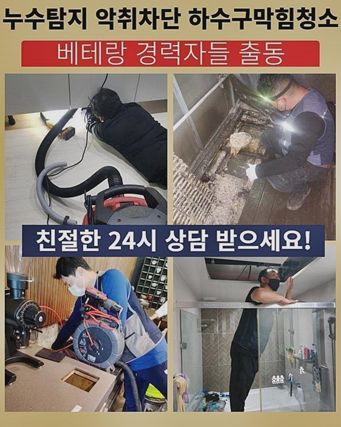
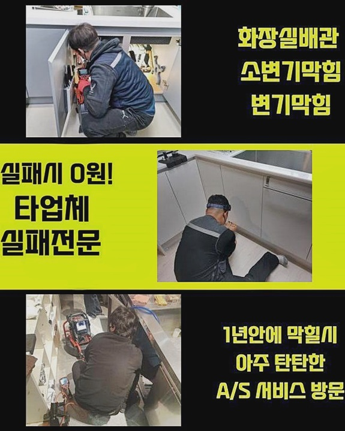
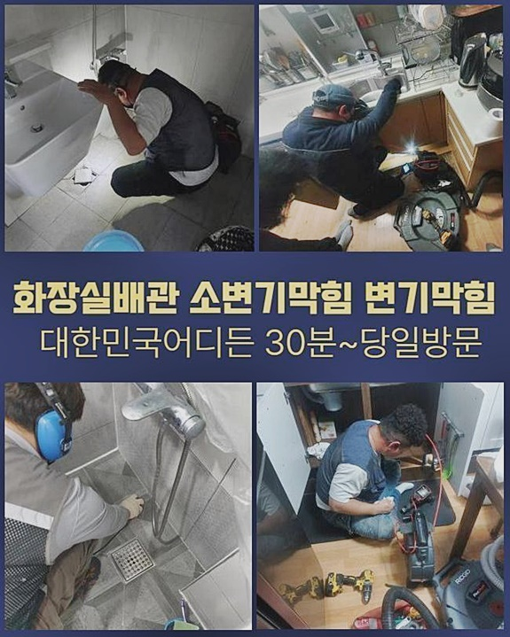
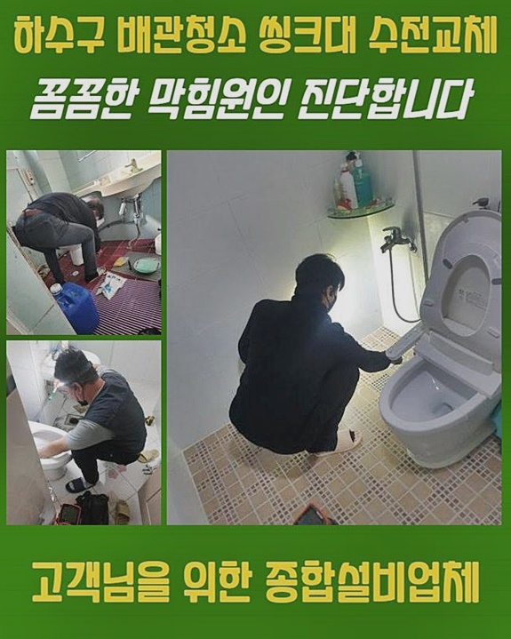
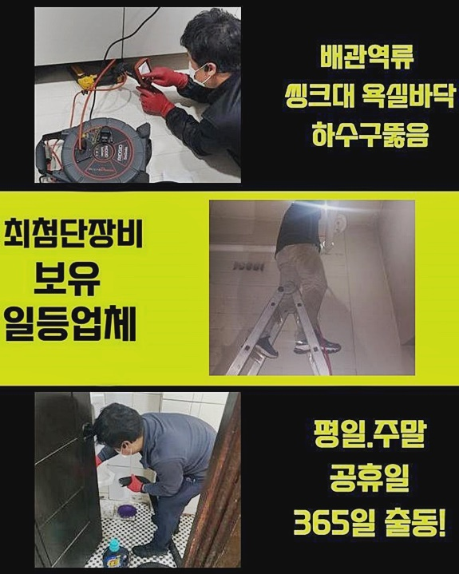
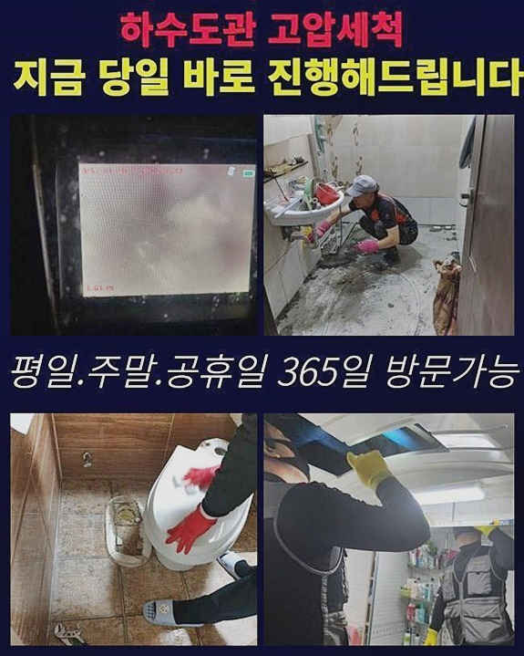

🏠 수원 팔달동욕실역류 우만동 하수구뚫는비용 설비공사
용인시 처인구 배관막힘 전문 시공 후기

📋 작업 개요
- 위치: 용인시 처인구, 수원시 영통구, 화성시 동탄
- 서비스 유형: 배관막힘, 하수구청소, 고압세척, 내시경점검
- 작업 일시:
- 업체명: 하수구수사대 (010-5615-2118)
🔍 문제 상황
인사드립니다
하수배관 막힘의 장소에 항상 마음놓고 현장으로 가는 배수관막힘 전문업체에요
지난주에 의뢰인께서 다목적실 하수배관에 이상이 있다고 전화를 주셨기에 발생장소에 찾아갔습니다
수원 팔달동욕실역류 우만동 하수구뚫는비용 설비공사
물빠짐이 아예 이루어지지 않더니 역한냄새도 발생하여 긴급히 저희 배수구막힘 팀에 요청하신 사태가 일어났어요
저희 전문기사님은 관련 발생장소에 찾아가서 배수로가 차단된 장애의 이유를 체크하고 깨끗하게 해결했습니다
어떠한 과정으로 물막힘의 근원을 찾아서 고쳤는지 함께 살펴보며 말씀드리겠습니다
만약에라도 같은 현황에 직면하신다면 놀라지말고 이 글의 정보를 숙지하면 도움이 되실거예요
저희 베테랑이 찾아간 장소는 주거지역으로 의뢰인 댁의 다목적공간에 세탁기 하수관이 막힌것 같다고 알려주셨는데요
고객의 말을 듣고 현장을 둘러보니 역한 냄새가 퍼지면서 비눗물이 올라오며 역류되고 있는 상태였죠
해결하기 전에 명확한 사유를 알아내려고 배수관 악취를 어떤 시점부터 맡기 시작했는지 하나씩 문의드렸어요

🔎 원인 분석
💡 전문가 진단: 정밀 진단 장비를 사용하여 슬러지의 고착 여부를 판명하고 타격/세척 작업을 실시했습니다.
고객님께서는 확실한건 아니지만 대략 한달 전쯤부터 배수 흐름이 속도가 줄었었다고 어슴푸레 생각난 그대로 이야기했어요
하수배관 막힘이 발생한다면 대부분 급작스럽게 상황이 생긴거라고 여기시지만 문제 작업장에는 이같은 초기증상이 있습니다
그런데 이상황을 심각하게 여기지 않으며 지나치고 무시해 최종적으로는 이처럼 물이 빠지지 않는 증상까지 일어난거죠
수도가 설치된 구역이면 하수관에서 발생하는 불쾌한 냄새가 아님에도 주방싱크나 세면기등 역한 냄새가 발생할 수 있어요
나쁜 냄새가 퍼지는 것 이는 바로 배수구 안쪽에서 불순물이 썩고 있다는 징후라고 여긴다면 이상이 발생한 걸 연상하기 쉬울거예요
막힘장소에 방문해 하수관에 물을 부었더니 의뢰인이 설명하신대로 세제거품들이 거꾸로 솟아나오면서 악취도 풍기게 되었습니다
이같이 하수관 지독한 냄새가 퍼지면 안쪽의 찌꺼기를 처리하는 조치들이 요구되어 가장먼저 석션장치로 첫번째 청소 작업을 처리해드렸습니다
석션장비는 가정에서 이용하시는 깊숙한 위치에 찌꺼기 정리는 까다롭지만 앞쪽에 위치한 물과 불순물을 없애는 것은 문제 없었습니다
저희 베테랑은 어떤 현장이든 아무렇게나 다수의 과정을 실행하는 것이 아니라 체계적인 처리로 쓸데없는 절차를 생략하고 있습니다
배관 카메라 장비를 배치할 수도 있겠지만 크게 막히지 않았다면 석션기구로 대체로 상황이 해소되기 때문이죠
전문팀이 문제공간에 방문후에 어떤 수단으로 막힘장애를 해결하는지가 결론적으로 고객님들의 수리비로 청구되기 때문에 주의하고 있습니다
저희 팀은 어느 상황이든 이유를 확실하게 파악하고 해결하는 동안에 고객의 지출 금액까지 감안하여 무의미한 작업을 실시하지 않습니다

🔧 작업 과정
일단 석션장비를 이용하여 배수관내의 불순물을 청소하는 업무를 수행하니 돌멩이같은 불순물들이 확인되었어요
더러운 물질을 검토해보니 하수배관의 역한냄새를 촉발하는 추가적인 더러운 물질인 기름뭉치가 배관내에 존재한다는 걸 알아냈습니다
그리하여 배수관 내시경장비를 통해 막고있는 찌꺼기가 어느곳에 얼마나 많이 축적되었는지 철저하게 살피기로 했어요
배수구 내시경기기는 얇고 기다란 파이프 끝쪽에 램프와 카메라가 한개의 장치로 결합되어 있고 다른쪽 끝부분엔 화면이 부착되어 있어요
길고 어두컴컴한 배수관 내부의 상태를 바로 점검할 수 있어 문제를 파악해 깔끔하게 해결 가능 하도록 보조하는 기기입니다
하수구 안에 넣어보니 불순물 덩어리들이 드러나기 시작했으며 모래와 유사한 것들도 찾아낼수 있었습니다
우리 기술자가 찾아간 현장은 이처럼 배수관 깊숙이 막힘을 초래하는 찌꺼기는 하수관 세척기기가 진입하기가 힘들기 때문에
긴 튜브를 더 연결해서 작업을 수행하거나 샤프트 기구를 이용하여 부수고 씻어내는 처리작업을 진행합니다
저희 팀은 이처럼 실전 경력이 많아 근본을 밝혀내는 데 문제 없고 문제를 파악해도 효과적인 수단으로 없앨 수 있기 때문에 고객의 염려를 말끔하게 처리해 드리고 있습니다
이렇게 방식이 확정되면 곧바로 배수파이프 안을 닦아내며 더러운 물질을 없애서 하수관로 역한냄새로 인해 신경이 쓰였던 막힌 곳의 요인들을 해결합니다
초기 실행하고 마무리하는 것이 아니라 다회 되풀이하여 처리한 후 물이 제대로 배출되는지 물 흐름 검사로 점검하고
다시 배관 카메라 장비를 투입해 검사하면서 남은 물질들은 없는지 말끔히 세정됐는지 점검합니다
저희 팀이 점검했던 장소는 반복적으로 문제를 일으키는 것을 조사하여 완벽하게 깨끗함이 체크하고 나면 수리를 마치게됩니다
하수관에서 제거한 잔여물들이 이 정도로 많았기 때문에 악취가 풍기고 찌꺼기가 퇴적되면서 역류 현상도 나타났습니다
때때로 부엌싱크와 붙어있는 하수배관이라면 조리중에 생긴 지방질이 배수구에 흡착되어 가면서 기름슬러지들과 식재료 찌꺼기들이 관찰되기도 하죠
이런 조건에서는 하수구 시스템이 주방싱크와 세탁기의 배수관이 연결되어 있으므로 싱크볼에서 배출된 하수가 세탁실의 하수배관으로 솟구치는 현상들이 발생할 때도 있죠
이러한 사안은 고난도의 조건이라서 저희 베테랑처럼 전문가들만 수리할 수 있는 문제이기 때문에 고약한 냄새가 배관에서 발생하고 물이 흐르는 상태가 원활하지 않다고 느껴진다면 위에서 확인해 본 예시처럼 배수장애가 나타나기 전 증세라는 것을 명심해주세요
배수장애가 나타나기 전 전문가에게 작업을 요청하신다면 방지하는 것이 가능하다는 사실을 기억하시면 유용하실거예요


✅ 작업 완료
출발하기 전에도 유선연락을 통해 지침을 드리고 방문하고 나서도 꼼꼼한 점검을 한 후 의뢰인댁에 적합한 개별 맞춤 해결책을 적용해드립니다
올바른 해결책을 통해 문제를 풀어보시길 제안드려요 혹여라도 불합리한 작업 방식으로 자택에서 처리를 해보려고 하시는데
반대로 문제를 더 나쁘게 만드는 경우가 대부분이기 때문에 저희 수리업체로 추가 문의를 자주 주시고 있어요
자택에서 해결될 수 있다면 무방하지만 악화되는 사태를 예방하기 위해 상담을 최우선으로 받으시는 편이 바람직한 선택입니다
고객 상담은 계속 운영하고 있으니 필요시 전화주셔서 어려움을 풀어내시길 바랍니다



⚠️ 하수구 배관 막힘 예방 및 관리 가이드
- ✅ 머리카락, 비닐, 물티슈 등 물에 분해되지 않는 이물질은 절대 흘려보내지 마세요.
- ✅ 기름기 많은 식기는 설거지 전 키친타올로 먼저 기름때를 닦아내세요.
- ✅ 주기적으로 배수구에 뜨거운 물을 가득 부어주어 유지방 고착을 방지하세요.
- ✅ 작업 후 1년 이내 재발 시 무상 A/S 보증 서비스를 제공합니다.
💡 핵심 정리
- 확실한 장비 작업(내시경 점검 및 샤프트 스케일링)으로 원인을 뿌리 뽑습니다.
- 작업 후 1년 이내에 동일한 부위 재발 시 100% 무상 A/S 서비스를 보장합니다.
- 서울 · 경기 · 인천 전 지역에 24시간 언제든 긴급 출동할 수 있도록 항시 대기 중입니다.
❓ 자주 묻는 질문 (FAQ)
🚨 용인시 처인구 배관막힘 문제로 고민이신가요?
정확한 원인 진단과 확실한 시공으로 재발 없는 해결을 약속드립니다.
24시간 긴급 출동 | 서울 · 경기 · 인천 전지역 | 1년 내 재발 시 무상 A/S